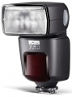

美兹52AF-1灯头可以前后300度，上下90度旋转， 支持24-105范围的电动变焦，当拉出内置广角散射片可以获得最大12mm的照射范围。另外，美兹52AF-1所用的菲涅尔片和58AF，50AF也有所不同显得格外通透，并且内置了抽拉式反射卡。在操作控制方面采用了全新的触摸式设计，使得美兹闪光灯一直被诟病的操作繁琐的软肋得到了解决，哪怕是新手也可以非常迅速的上手，显示屏有重力感应功能，屏幕可以360度旋转。